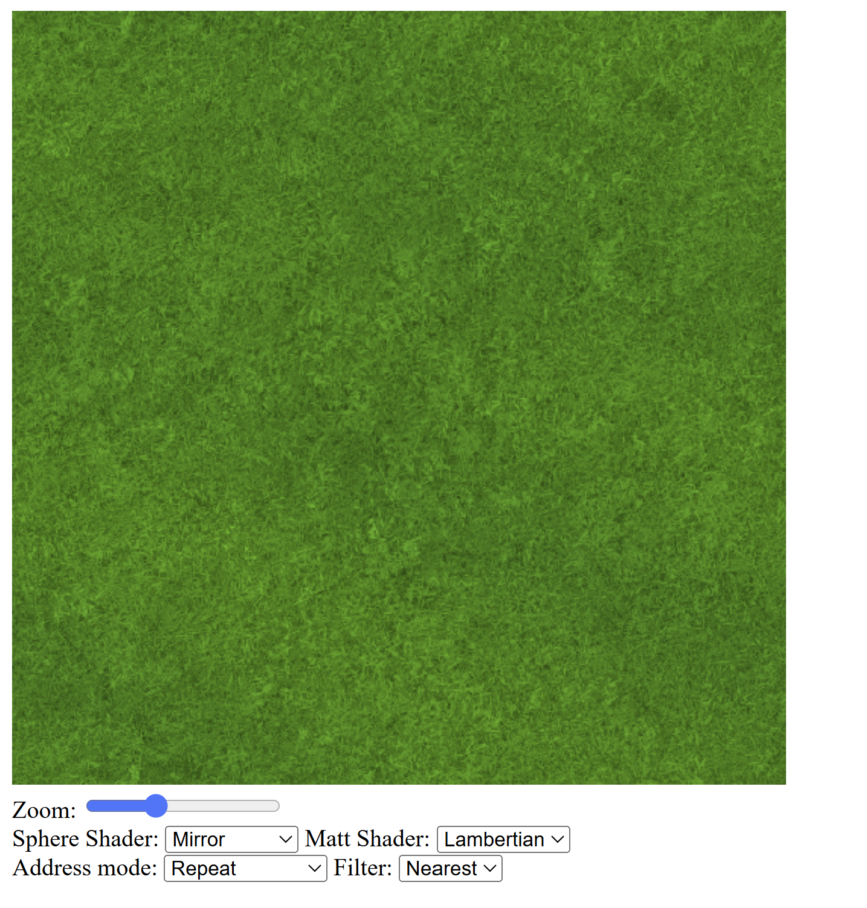
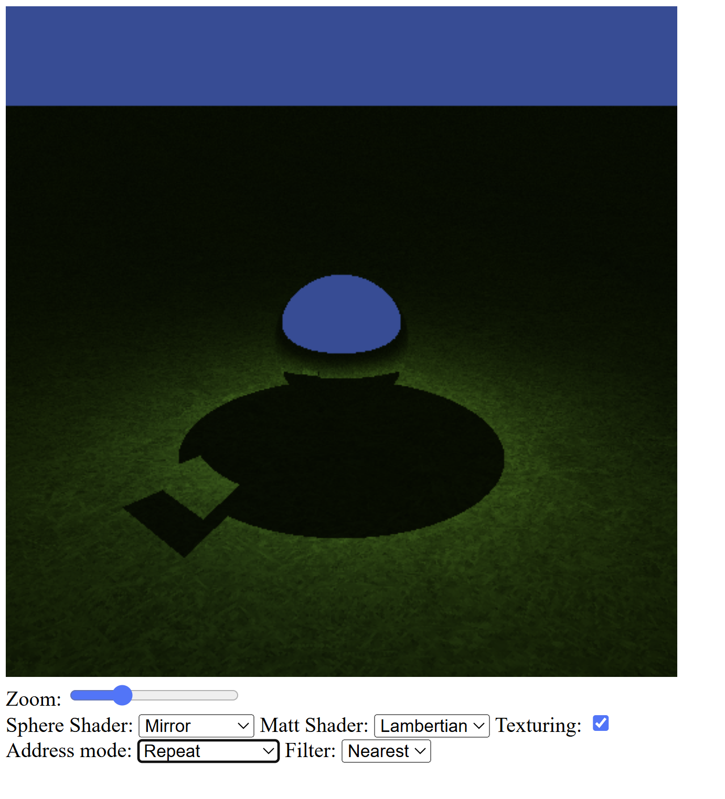
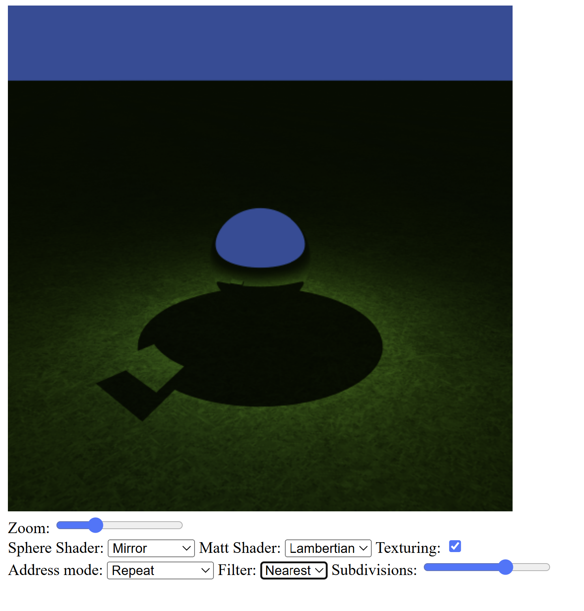
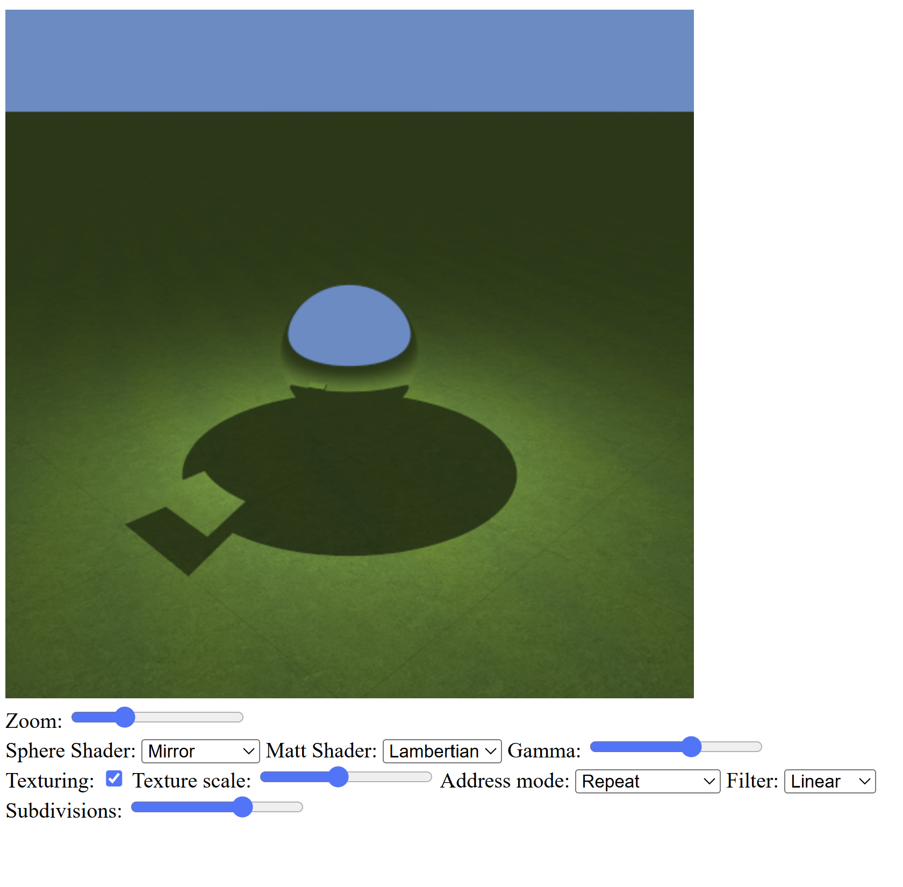

Exercise 1 — Texture loading and sampling
In this exercise, I added support for loading an image file as a GPU texture without color space conversion. The texture is rendered directly using image plane (uv) coordinates.
I implemented different texture addressing modes (clamp-to-edge and repeat) and filtering modes (nearest and linear), and added a simple interface to switch between them at runtime.
Source code: GitHub – Worksheet 3 / Exercise 1
Exercise 2 — Texture mapping on the plane
In this exercise, I mapped the loaded texture onto the plane of the default scene.
Texture lookup was moved to the intersection stage by extending the HitInfo
structure with texture coordinates.
Texture coordinates are computed using inverse mapping based on an orthonormal basis (tangent, binormal, normal) of the plane. A texture scaling factor is applied, and an interface allows texturing to be enabled or disabled.
Source code: GitHub – Worksheet 3 / Exercise 2
Exercise 3 — Stratified jitter sampling
This exercise adds stratified jitter sampling for anti-aliasing. Each pixel is subdivided into multiple sub-pixels, and a ray is cast through each jittered sample position.
Jitter offsets are computed in JavaScript and stored in a GPU storage buffer. The fragment shader accumulates the radiance from all sub-pixels and averages the result. An interface allows changing the pixel subdivision level interactively.
Source code: GitHub – Worksheet 3 / Exercise 3
Exercise 4 — Texture scaling and aliasing
In the final exercise, I extended the interface to control the texture scaling factor, allowing the texture to be magnified by a factor from 1 to 10.
The interface now supports toggling texturing, texture address mode, filtering mode, pixel subdivision level, and gamma correction. Different configurations were used to observe texture aliasing effects and the impact of filtering and anti-aliasing.
Source code: GitHub – Worksheet 3 / Exercise 4